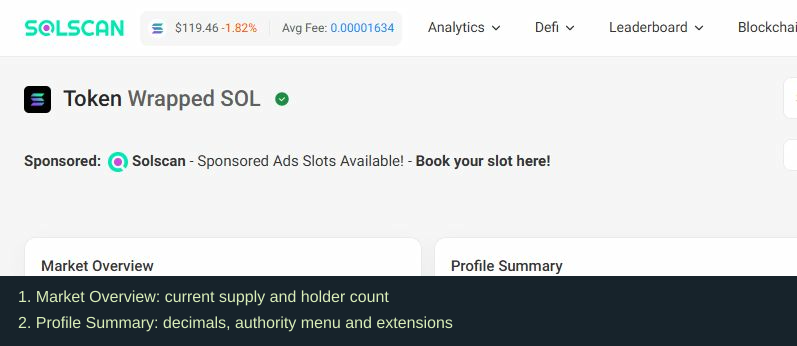

Creating and launching a token
Creating a mint or contract sets up the token. Trading also needs a launch mechanism or market. The creator allocation and initial price depend on the launch rules.
On Solana, the mint records supply, decimals, and relevant authorities. Decimals convert raw units into displayed token amounts. Check the actual platform mode rather than assuming every launch uses the same supply or allocation.
Who receives the first tokens?
| Destination | What to check | What to record |
|---|---|---|
| Creator/team | Allocation and purchase transactions | Units, actual spend, restrictions |
| Launch mechanism | Platform rules and account role | Units reserved for trading or settlement |
| Treasury | Controller and spending rights | Units, signers, stated purpose |
| Pool | Exact pool and reserve accounts | Reserves and position rights |
| Buyers | Completed purchases | Units received and actual spend |
Who sets the starting price?
A launch curve uses its parameters and current state to quote trades. A directly seeded pool starts with a ratio of paired assets. Size, fees, and changes in reserves affect execution. Other venues may use auctions or order books.
Market cap multiplies price by a supply measure. To estimate proceeds from selling, check pool depth and a quote for the quantity being investigated.
How to investigate it
- Search the exact mint/contract in the explorer. Compare the full address with your source.
- Record current supply, decimals, owner program, and time. On Solscan, look at Market Overview, Profile Summary, and Misc. Section 6 checks the specific authority types.
- Open creation and distribution transactions. Assign recipients a role using those records and launch documentation.
- Save the definition of each supply figure: total, circulating, maximum, or another measure.
- Open the current curve or pool. Record its address and a size-specific quote.

Find Current Supply, Decimals, the Authority menu, and Token Extensions. Open specific authority details before recording mint or freeze status; a summary label can refer to a different authority.
Captured 5 October 2026 on the public Wrapped SOL page. This is a navigation example. Wrapped SOL has special token mechanics; its numbers and authority labels are not the SAMPLE case or a standard meme-token assessment. Open your own token address to do the checks.
Practical case — illustrative
SAMPLE issued 150m units. At 09:00 UTC, 30m are pool reserves, 20m are in team vesting, and 100m are available to ordinary holders. Creation and allocation records account for these totals. Section 5 checks the owners and linked wallets.
Record what each holder paid: an allocation and a later market purchase may have very different costs. Use the same cost method, including relevant fees, and leave missing purchase history unknown.
Keep this record
Save an allocation table: total units, pool reserves, locked units, available holder units, creator-group units, and transaction links. Include chain, address, decimals, launch mode, and time.
Add these findings to your review worksheet →
Check your understanding — answered
The launch contract holds many units. Who owns them? Check its role and release rules before assigning them to the creator.
A website lists maximum supply. What should I verify? Check the enforced limit and current minting permissions.
Does $1m market cap mean holders can withdraw $1m? Use actual depth and sale quotes to estimate proceeds.
Mechanism references
SAMPLE is made up for this course. Date each finding. For a real token, use current transaction records and platform rules. Inspect shows sampled trades; use external records to check ownership and permissions.